3.6 副本管理器
在Kafka 0.8版本中引入了副本机制，引入副本机制使得Kafka能够在整个集群中只要保证至少有一个代理存活就不会影响整个集群的工作，从而大大提高了Kafka集群的可靠性和稳定性。这里提到代理存活的概念，同其他分布式系统一样，Kafka对代理是否存活（alive）也有明确的定义，Kafka存活要满足两个条件。
（1）一个存活的节点必须与ZooKeeper保持连接，维护与ZooKeeper的Session（这是通过ZooKeeper的心跳机制来实现的）。
（2）如果一个节点作为Follower副本，该节点必须能及时与分区的Leader副本保持消息同步，不能落后太久。
准确来讲，满足以上两个条件的节点应该是同步中的（in sync）节点，Leader副本会追踪所有同步中的节点，一旦一个节点宕机、卡住或是延迟太久，Leader就会将该节点从同步副本（in sync replicas）集合列表中移除。至于代理何时被认为是已卡住或者数据同步落后Leader太久是由配置项${replica.lag.time.max.ms}决定的，默认情况下该配置项设置为10秒。在Kafka 0.9之前的版本，还通过配置项${replica.lag.max.messages}配置Follower落后Leader的消息条数来定义某个代理是否已落后太多，然而在0.9之后的版本中已移除该配置项，因为该配置项并不能真实反映出一个代理是否已落后太多，例如，当某一时刻生产者发送来的消息数大于${replica.lag.max.messages}时，在这一时刻所有的副本均视为落后太多，会被Leader从同步列表中移除，显然不合理。
我们可以在代理启动时加载的配置文件server.properties中通过配置项default.replication.factor=n来配置副本数量（这里n为副本数），默认情况下，Kafka的副本数为1，该配置项配置了主题默认所拥有的副本数，如我们通过生产者向一个不存在的主题发送消息，当配置项auto.create. topics.enable=true时，Kafka会自动创建生产者指定的主题，该主题拥有${default.replication.factor}个副本。我们也可以在创建主题时通过设置--replication-factor n为每个主题分别指定副本数，创建主题时指定的副本数会覆盖default.replication.factor配置的值。这样一个副本为n的集群就允许n−1个节点失败而不会影响整个集群的工作。
在所有的副本节点中，有一个节点作为Leader负责接收客户端的读写操作，其他副本节点作为Follower从Leader节点复制数据进行数据同步。这里的复制机制既不是同步复制，也不是单纯的异步复制。因为同步复制要求“活着的”Follower都从Leader复制完消息，这条消息才被认为是已提交（commit）。对生产者而言，生产者可以通过offsets.commit.required.acks参数来设置选择等待消息被提交的方式，而只有被提交的消息才能被消费者消费。同步方式极大地影响了吞吐率。而异步复制方式下，Follower异步地从Leader复制数据，消息只要被Leader写入数据文件中就被认为已经提交，这种情况下如果Follower都落后于Leader，而Leader突然宕机，则会丢失数据。Kafka采用维护一种同步列表的方式很好地均衡了确保数据不丢失以及吞吐率的问题。
副本管理器（ReplicaManager）负责对副本管理，主要包括对控制器发送的LeaderAndIsrRequest指令、StopReplicaRequest指令以及UpdateMetadataRequest指令进行处理，维护副本ISR变化，以及Follower与Leader数据同步的管理。
在介绍副本管理器基本功能之前，首先简要介绍分区和副本的相关知识。因为从底层实现来看，副本管理器对副本的管理体现在对分区的管理，副本管理器提供了创建或获取分区相关方法，如getOrCreatePartition()方法，而分区又封装了对副本的管理，因为副本是相对分区而言的，即副本是特定分区的副本，副本管理器对副本的管理调用也是分区操作副本的方法，如获取分区副本的getReplica()、获取或创建副本的getOrCreateReplica()等。
3.6.1 分区
Kafka将一个主题在逻辑上分成一个或多个分区，每个分区在物理存储上对应一个目录，目录名为${topicName}-${partitionId}，其中${topicName}是主题的名字，${partitionId}是分区编号，每个主题的分区都有唯一编号，分区编号从0依次递增。分区目录下存储的是该分区的日志段，包括日志数据文件和两个索引文件。每个分区又对应一个或多个副本。需要注意的是，分区数可以大于节点数，但副本数不能大于节点数，因为副本需要分布在不同的节点上，这样才能达到备份的目的。
在创建主题时，若是以Kafka命令行创建主题，通过--partitons参数指定分区数，也可以在代理启动时所加载的server.properties配置文件中通过配置参数num.partitions来指定默认分区数。假设我们在一个有3个节点的Kafka集群上创建一个kafka-action的主题，该主题有3个分区，每个分区只有一个副本，则会在${log.dir}目录下创建一个分区目录，分区在集群代理分布结构示意图如图3-25所示。
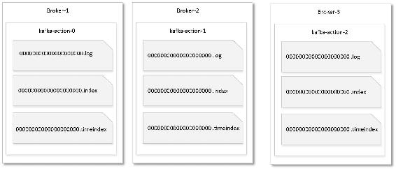
图3-25 kafka-action主题3个分区在代理上的分布情况
由图3-25可知，当集群有3个节点时，3个分区均匀地分布在3个节点上。通常为了保证主题的分区均匀分布到集群中，建议在创建主题时指定分区数为代理节点数的整数倍。当生产者向主题发送消息时会根据分区分配策略将消息分发到该主题相应的分区，Kafka保证同一个分区的数据是有序的，因此我们可以认为每个分区就是一个有序的消息队列。当生产者向一个主题写数据时，我们以kafka-action主题为例，该主题各分区存储数据逻辑结构示意图如图3-26所示。
对于图3-26所示的每个分区，在存储结构上有LEO和HW两个重要的概念。
LEO是Log End Offset的缩写，表示每个分区最后一条消息的位置，分区的每个副本都有自己的LEO。
HW是HighWatermark的缩写，将一个分区对应的ISR中最小的LEO作为HW，HW之前的消息表示已提交的消息，对消费者是可见的，消费者最多只能消费到HW所在的位置。HW之后的消息表示还没有被Follower副本同步完成。每个副本都有自己的HighWatermark。副本Leader和Follower各自负责更新自己的HighWatermark状态，Follower.HW <= leader.LEO。
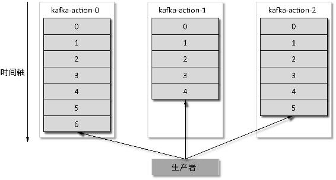
图3-26 分区存储数据的逻辑结构
LEO和HW其实是LogOffsetMetadata对象的messageOffset。Kafka将日志的每个偏移量对应的位置封装成一个LogOffsetMetadata对象，该对象包括记录消息偏移量的messageOffset字段以及该偏移量对应的日志在日志段中的相对位置（relativePositionInSegment）字段，以及日志段的基准偏移量（segmentBaseOffset）。因此我们说的LEO和HW其实均指LogOffsetMetadata对象的messageOffset字段，只不过二者对应在日志中的位置不同而已。LEO是日志文件中最后一条消息的位置，HW是表示ISR列表中各副本LEO最小值。
对于分区的Leader副本，LEO与HW的存储逻辑示意图如图3-27所示。
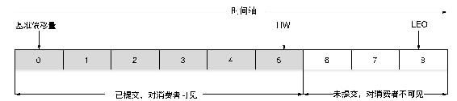
图3-27 LEO与HW的逻辑结构
每个主题的某一个分区只能被同一个消费组下的其中一个消费者消费，因此我们说分区是消费并行度的基本单位。同时，对于上层应用而言分区也是最小的存储单元，尽管每个分区是由一系列有序的顺序段组成的。从消费者角度来讲，我们订阅消费一个主题，也就是订阅了该主题的所有分区，当然也可以订阅主题的某个分区。从生产者角度来讲，我们可以通过指定消息的Key及分区分配策略将消息发送到主题相应的分区当中。
Kafka将分区抽象为一个Partition对象，Partition定义了一个assignedReplicaMap引用用于保存该分区所有副本，assignedReplicaMap是一个Pool类型对象，并维护了该分区同步的副本集合inSyncReplicas，同时Patition对象定义了分区对副本操作的方法，包括创建副本、副本角色切换、ISR列表维护以及调用日志管理器（LogManager）追加消息等。分区对副本操作的方法由副本管理器在对副本管理时调用。对于这些方法的实现细节我们不展开介绍，在副本管理器对副本管理操作逻辑中会适当进行讲解。
3.6.2 副本
一个分区可以有一个或多个副本，副本根据是否接受读写请求，又分为Leader副本和Follower副本，一个分区有1个Leader副本，有0个或多个Follower副本。Leader副本处理分区的所有读写请求并维护自身及Follower副本的状态信息，如LEO、HW等，Follower副本作为消费者从Leader副本拉取消息进行同步。当Leader失效时，通过分区Leader选举器从副本列表中选出一个副本作为新的Leader。
Kafka将副本抽象为一个Replica对象，由于副本是属于某个主题的某个分区，分布在特定代理之上，因此Replica对象的基本属性包括主题（topic）、分区编号（partitionId）和代理编号（brokerId）。当副本的brokerId与当前代理的brokerId相同时，我们将该副本称为当前代理的本地副本，否则称为远程副本。
同时，副本还有LEO、HW、副本追加数据的Log以及上次与Leader同步的时间，因此还有logEndOffsetMetadata、highWatermarkMetadata、Log和lastCaughtUpTimeMsUnderlying属性字段。对于远程副本而言，Log字段对应的值为null，因为远程副本的Log并不在当前代理上。logEndOffsetMetadata表示已追加到Log的最新消息对应的偏移量，不过本地副本和远程副本获取此字段值的方式不同，本地副本可以通过log.get.logEndOffsetMetadata来获取副本的LEO，远程副本由于Log属性为空，因此并不能直接从本地获取，而该字段的值是由远程副本对应的代理发送请求进行更新。对于Follower副本highWatermarkMetadata的值是从Leader副本获取更新。
对于一个有多副本的分区，如修改kafka-action主题的副本数为2，则该主题各分区副本在Kafka集群分布上的示意图如图3-28所示。当然，若分区只有一个副本时则该副本即为Leader副本。
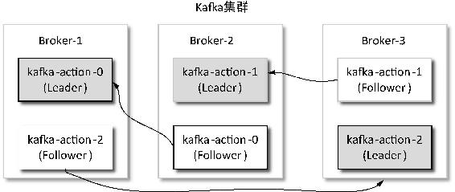
图3-28 分区多副本分布
3.6.3 副本管理器启动过程
每个代理启动时，都会启动一个副本管理器，副本管理器的实例化依赖于任务调度器实例、日记管理器实例以及用于副本同步限流控制的限流器（ReplicationQuotaManager）实例。实例化过程具体逻辑如下。
（1）创建一个用于记录控制器发生变化次数的controllerEpoch字段，初始值为0。同时创建一个Pool[(String, Int), Partition]对象用于保存该代理节点上的所有分区，该Pool保存了分配到该节点的每个主题的每个分区编号与分区的映射关系，将Pool对象记为allPartitions。
（2）创建一个用于副本数据同步的线程管理组件ReplicaFetcherManager，该组件创建依赖ReplicationQuotaManager对象，而实质是创建一个用于处理副本抓取请求的线程ReplicaFetcherThread。
（3）加载或创建${log.dri}配置的所有存储路径下的HW检查点文件，文件名为replication- offset-checkpoint，因此在每个代理启动时我们都会在${log.dir}目录下看到一个replication- offset-checkpoint文件，该文件记录每个分区已被提交（committed）的最大偏移量。
（4）创建一个用于保存分区ISR变化的Set类型的isrChangeSet集合对象，并创建一个AtomicLong类型的lastIsrChangeMs和lastIsrPropagationMs对象，分别用于记录新的ISR信息成功写入ZooKeeper的/brokers/topics/${topicName}/partitions/${partitionId}/state节点的时间，以及ISR变化信息写入ZooKeeper的/isrchange_notification/isr_change节点的时间，以触发IsrChangeNotificationListener监听器通知代理更新缓存的ISR信息，这些字段在ISR发生变化时会被更新。
（5）为当前的代理创建DelayedProduce和DelayedFetch两个基于条件触发的延迟操作，这两个延迟操作交由DelayedOperationPurgatory监视，DelayedOperationPurgatory是延迟操作的辅助类，以泛型的方式接收需要该辅助类监视的具体延迟对象。之所以在副本管理器启动时需要创建DelayedProduce，是由于在生产者发送消息时，若设置了acks为−1，则需要等待ISR中的所有副本都从Leader同步完数据或在等待时间超时后再向生产者返回信息，也就是说不能立即向生产者做出响应，这就要发挥DelayedProduce的功能，每次Follower向Leader发送FetchRequest请求时，DelayedOperationPurgatory会检测是否满足所监视的DelayedProduce执行条件，若满足了DelayedProduce执行条件，则在其onComplete()方法中回调向生产者返回写操作结果的方法。同理，在Follower副本向Leader副本发送FetchRequest请求时也可能不能立即得到返回响应，如Leader正在处理消息写入，这样为了让Follower拉取到更多的消息，即对LEO进行后移处理，此时就会延迟提取（Fetch）操作。
当实例化完成后调用startup()方法启动ReplicaManager时，在该方法中会启动两个后台定时任务。
（1）第一个定时任务“isr-expiration”用于定期检查过期的副本，将过期副本从ISR列表剔除，收缩ISR。若有与Leader副本数据不同步的副本则从原ISR中剔除不同步的副本节点，构造新的ISR集合，并在ZooKeeper的/brokers/topics/${topicName}/partitions/${partitionId}/state路径下更新最新的ISR信息。
（2）第二个定时任务“isr-change-propagation”用于定时将ISR发生变化的分区编号信息写到ZooKeeper的/isrchange_notification/isr_change节点中。
3.6.4 副本过期检查
副本管理器启动时启动了一个对副本过期检查的定时任务，该定时任务调用副本管理器的maybeShrinkIsr()方法定期进行副本过期检查。从这个函数的名字可以看出，其功能就是检查分区ISR是否需要进行收缩，即从ISR剔除与Leader数据不同步的副本。
在ReplicaManager.maybeShrinkIsr()方法中将轮询当前代理的所有分区allPartitions，调用分区的maybeShrinkIsr()方法执行过期副本的检查。分区的maybeShrinkIsr()方法具体实现逻辑如代码清单3-2所示（去掉了非核心逻辑）。
代码清单3-2 分区收缩ISR列表的Partition.maybeShrinkIsr()方法的具体逻辑
def maybeShrinkIsr(replicaMaxLagTimeMs: Long) {
val leaderHWIncremented = inWriteLock(leaderIsrUpdateLock) {
leaderReplicaIfLocal() match {
// 查找是否有过期副本
case Some(leaderReplica) =>
val outOfSyncReplicas = getOutOfSyncReplicas(leaderReplica, replicaMaxLagTimeMs)
// 存在过期副本
if(outOfSyncReplicas.nonEmpty) {
// 从该分区当前同步的ISR集合中移除过期的副本作为新的ISR集合
val newInSyncReplicas = inSyncReplicas -- outOfSyncReplicas
// 由于ISR发送了变化，因此请求更新该分区在ZooKeeper中记录的ISR信息
updateIsr(newInSyncReplicas)
// 用于metrics信息收集
replicaManager.isrShrinkRate.mark()
// 由于ISR发生了变化，所以检查Leader的HW是否需要更新，
// 以保证Leader的HW为ISR发生变化后各副本偏移量最小值
maybeIncrementLeaderHW(leaderReplica)
} else {
false
}
case None => false
}
}
// 如果更新了分区Leader的HW，尝试运行当前分区被延迟执行的操作
if (leaderHWIncremented)
tryCompleteDelayedRequests()
}当Follower副本已将Leader副本LEO之前的日志全部同步时，则该Follower已追赶上Leader，此时会以当前时间更新该副本的lastCaughtUpTimeMs字段。从代码清单3-2可知，副本过期检查任务的第一步就是查找该分区的过期副本。通过调用分区的getOutOfSyncReplicas()方法，该方法主要逻辑如代码清单3-3所示。
代码清单3-3 Partition.getOutOfSyncReplicas()方法的核心逻辑
val leaderLogEndOffset = leaderReplica.logEndOffset // Leader副本的LEO
val candidateReplicas = inSyncReplicas – leaderReplica // Follower副本
val laggingReplicas = candidateReplicas.filter(r => (time.milliseconds - r.lastCaughtUpTimeMs) > maxLagMs) // 查找Follower副本上次追上Leader的LEO的时间与当前时间
// 之差大于Follower副本落后Leader副本最大时间的阈值的副本
if(laggingReplicas.nonEmpty)
debug("Lagging replicas for partition %s are %s".format(TopicAndPartition(topic, partitionId), laggingReplicas.map(_.brokerId).mkString(",")))
laggingReplicas // 返回查找的落后Leader的Follower副本获取不同步Follower副本的主要逻辑就是检查当前ISR列表中Follower副本的lastCaughtUpTimeMs与当前时间之差是否超过${replica.lag.time.max.ms}值，若超过了该值，则分区Leader认为该Follower副本与其不同步，应该从ISR中移除。在找出需要移除的副本之后，重新构造ISR集合，并请求将最新的ISR信息写入ZooKeeper的/brokers/topics/${topicName}/ partitions/${partitionId}/state节点中，该节点信息的变化会触发相关监听器通知代理更新缓存中的ISR信息。 在将新ISR列表信息成功写入ZooKeeper后，更新副本管理器缓存的isrChangeSet和lastIsrChangeMs字段的值，并更新分区维护的同步副本集合inSyncReplicas信息及zkVersion信息。最后调用Partition.maybeIncrementLeaderHW()检查是否需要更新Leader的HW，若更新过分区Leader的ISR信息，则尝试运行当前分区被延迟执行的操作，即DelayedProduce和DelayedFetch操作。
下面介绍更新Leader副本HW的maybeIncrementLeaderHW()方法的主要逻辑。
首先将该分区的所有副本LEO进行排序，取各副本LEO最小值作为Leader副本新的HW，记为newHighWatermark。newHighWatermark是一个LogOffsetMetadata对象，这里说的LEO及HW均指LogOffsetMetadata对象的messageOffset属性值，取当前Leader副本的HW记为oldHighWatermark。
然后判断是否满足更新Leader副本HW的条件，更新条件如下。
- 比较oldHighWatermark.messageOffset<newHighWatermark.messageOffset是否成立，也就是比较两者的HW值。
- 比较oldHighWatermark.segmentBaseOffset<newHighWatermark.segmentBaseOffset是否成立，也就是判断是否已有新的日志段生成。
满足以上两个条件之一，就需要更新Leader副本的HW，即将newHighWatermark赋值给Leader副本的highWatermarkMetadata。
副本过期检查逻辑较简单，对于每个分区的过期副本检查的基本流程如图3-29所示。
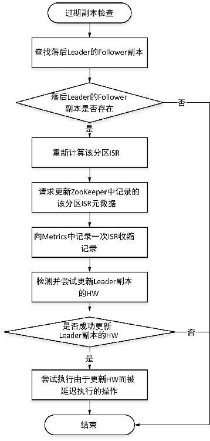
图3-29 过期副本检查基本流程
3.6.5 追加消息
当生产者发送消息（ProduceRequest）或是消费者提交偏移量到内部主题时，由副本管理器的appendMessages()将消息追加到相应分区的Leader副本中。该方法定义如下：
appendMessages(timeout: Long, ⇽--- DelayedProduce延迟时长
requiredAcks: Short, ⇽--- acks方式
internalTopicsAllowed: Boolean, ⇽---是否允许写入内部主题标识
messagesPerPartition: Map[TopicPartition, MessageSet], ⇽---待写入的消息与分区映射关系
responseCallback: Map[TopicPartition, PartitionResponse] => Unit) ⇽---写操作结果响应回调函数该方法第四个参数是一个Map对象，保存了本次写操作消息所对应的主题和分区，生产者可以订阅多个主题，在一次发送时会将多个主题发送到同一个分区的消息一起发送到分区的Leader副本，最后一个入参是一个回调函数responseCallback，用于根据acks值，当消息成功写入或者处理时间超时后向客户端做出响应。副本管理器调用appendMessages()方法将消息写入Leader副本的处理逻辑如下。
首先，检查acks值是否合法。当前版本的Kafka支持的acks值为0、−1、1，若调用appendMessages()方法入参acks不为这3个值中之一时，则表示acks不合法，会直接回调responseCallback，返回Errors.INVALID_REQUIRED_ACKS应答码。若acks合法，则会调用ReplicaManager.appendToLocalLog()方法将消息写入Leader副本，并得到各TopicPartition对应的消息追加操作状态。由于只有Leader副本才能处理客户端的读写请求，因此副本管理器也即为Leader副本对应的代理所启动的ReplicaManager，所以写入Leader副本也就是由副本管理器将消息写入本地副本。需要注意的是，Leader副本和本地副本没有直接联系，两者定义出发点不同。
然后，检查是否满足需要延迟生产操作（DelayedProduce）。若同时满足以下3个条件，则需要创建DelayedProduce延迟操作。
（1）acks==−1，即ISR列表中的所有Follower副本要从Leader副本将消息同步到本地。
（2）messagesPerPartition集合不为空，即消息与主题和分区映射关系不能为空，客户端本次请求需要有数据写入。
（3）至少要对一个分区的消息追加操作成功。
若满足创建延迟操作的条件，则创建一个DelayedProduce对象并交由delayedProducePurgatory管理，由DelayedProduce在onComplete()方法中回调responseCallback，向客户端返回追加操作结果状态。否则直接回调responseCallback将appendToLocalLog()方法对各TopicPartition消息追加操作的状态返回给客户端。
下面详细讲解副本管理器的appendToLocalLog()方法是如何将消息写入本地副本的。
ReplicaManager.appendToLocalLog()方法迭代messagesPerPartition集合中的每个元素，检查消息写入主题是否是Kafka的内部主题，若是内部主题同时要判断是否允许对内部主题（“_consumer offsets”）的追加，当前版本的Kafka只允许组协调器将相应的元信息信息以及消费者消费偏移量追加到内部主题。如果消息写入的主题为Kafka内部主题，同时该消息又不允许被写入内部主题，此时对此消息的追加操作就要记为失败，即构造一个LogAppendResult对象，该对象有两个属性，消息追加的结果LogAppendInfo类型的info字段，以及一个标识消息追加异常的Throwable类型的error字段。当消息追加成功构造LogAppendResult时，此error为Errors.NONE。当向Kafka内部主题追加消息而又不被允许时，LogAppendInfo对象的info为UnknownLogAppendInfo，error为InvalidTopicException。如果消息待追加的主题不为Kafka内部主题或者虽然是内部主题但该消息被允许追加，调用该消息对应分区的appendMessagesToLeader()方法将消息写入Leader副本。
Partition.appendMessagesToLeader()方法首先获取该分区的Leader副本，然后检测ISR列表中副本数inSyncSize是否大于配置的最小同步副本数minIsr，minIsr取值为${ min.insync.replicas }，默认值为1。若inSyncSize<minIsr，同时acks又为−1，则抛出NotEnoughReplicasException异常，否则调用Log.append()方法将消息追加到日志文件中。由于在日志追加时会更新LEO，为了让一次拉取操作尽可能返回更多的消息，可能触发了DelayedFetch延迟操作，因此这里需要调用ReplicaManager. tryCompleteDelayedFetch()方法尝试将延迟拉取操作执行完成。同样由于消息的追加，应该调用分区的maybeIncrementLeaderHW()对HW检测并进行相应的处理。如果HW进行了更新操作，这里需要解锁延迟操作，即检测尝试让DelayedProduce和DelayedFetch执行完成。最后将追加结果返回给外部调用者即ReplicaManager.appendToLocalLog()，在该方法中会对Partition.appendMessagesToLeader()方法处理过程中抛出的异常进行处理封装为相应的LogAppendResult对象。
至此，副本管理器对消息的追加操作讲解完毕。图3-30以时序图形式展示了生产者发送消息、副本管理器进行消息追加操作的过程。
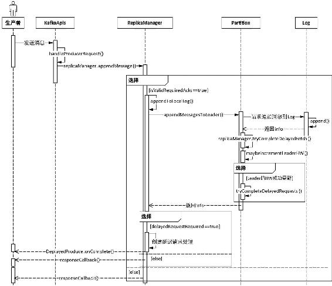
图3-30 副本管理器追加消息到Leader副本的时序图
需要说明的是，图3-30所示的时序图中responseCallback()方法直接返回给客户端，其实responseCallback()方法是将消息追加状态实例构造了一个ResponseSend对象，由ResponseSend对象再实例化一个Response对象，并将该对象添加到RequestChannel的responseQueues队列中，然后由Processor线程将追加结果发送给客户端。
3.6.6 拉取消息
副本管理器除了负责将消息写入Leader副本外，同时还负责处理KafkaApis的FetchRequest请求，通过ReplicaManager.fetchMessages()方法从分区Leader副本获取消息，其实是由KafkaApis在handleFetchRequest()方法中调用ReplicaManager.fetchMessages()方法。与appendMessages()方法类似，fetchMessages()方法最后一个参数也是一个回调函数，用于返回消息拉取的结果，同时也是一次FetchRequest可以对应多个TopicAndPartition发起请求。
在Kafka中拉取消息的角色有两个，一个是Kafka的普通消费者（相对Follower副本而言），另一个就是Follower副本，副本管理器是通过FetchRequest请求的replicaId来区分拉取请求的角色。因为每个副本有replicaId属性，即副本的replicaId总是非负数，而消费者的replicaId为−1。下面对副本管理器处理拉取消息的逻辑进行详细分析。
首先，根据请求的replicaId来设置isFromFollower值，用于区分是Follower副本进行消息同步还是普通消费者拉取消息。如果是消费者拉取消息则应该设置fetchOnlyCommitted标识为true，因为消费者只能消费已提交的消息，也就是说只能消费HW位置之前的消息，而对Follower副本则需要将该标识字段设置为false，因为Follower副本需要同步HW之后的消息。还有一个用于标识是否只从Leader副本拉取消息的标识字段fetchOnlyFromLeader，只有在消费者debug模式时该标识才会false，其他场景该字段恒为true，对于debug模式我们不考虑。
设置好相应标识字段之后，开始调用ReplicaManager.readFromLocalLog()方法从Leader副本读取消息。在该方法中调用Log.read()方法从Leader副本中读取消息。从Leader副本读取消息之后，如果是Follower副本发起的拉取请求，则需要调用ReplicaManager.updateFollowerLogReadResults()方法对请求的每个TopicAndPartition对应的Follower副本进行如下处理。
（1）更新副本的LEO，因为分区管理副本的操作，因此调用的是该副本对应分区的updateReplicaLogReadResult()方法。分区持有一个assignedReplicaMap引用，维护了该分区所有副本，从assignedReplicaMap中取出当前副本并将所拉取的消息LogOffsetMetadata赋值给该副本的LogOffsetMetadata，完成LEO的更新。同时若所拉取消息的偏移量是Leader副本的LEO，则更新该Follower副本的lastCaughtUpTimeMs，即消息同步已追上了Leader副本。需要注意的是，这里更新均是对分区Leader维护的Follower副本相应信息的更新。由于副本从Leader副本拉取了消息，此时需要检查是否要扩张ISR列表，若该副本已被Leader从ISR列表中剔除，则将该副本加入ISR列表中。将新的ISR信息写入ZooKeeper，同时更新本地维护的inSyncReplicas集合信息，并对Leader副本的HW进行相应检查处理。若对Leader副本的HW进行了更新，此时需要检查被延迟的操作（DelayedProduce和DelayedFetch）是否满足执行条件，让其执行完成。
（2）检查DelayedProduce是否满足执行条件，让其执行完成。
然后，检查是否满足立即对FetchRequest做出响应的条件，需要立即做出响应的条件如下。
（1）请求的timeout为0，如果在调用消费者的poll()方法时设置timeout为0，则不需要等待拉取消息字节相关的阈值。
（2）FetchRequest本身没有指定读取消息的分区。
（3）已读取到足够消息，即消息内容已大于FetchRequest请求最小字节的限制。
（4）在从Leader读取消息时发生了异常。
若满足上述条件之一，则构造相应结果回调responseCallback()方法。如果不满足对客户端立即做出响应，那么将读取的结果信息进行处理构造一个FetchMetadata对象，然后构造一个DelayedFetch对象，交由delayedFetchPurgatory进行管理。由DelayedFetch在满足执行条件后向客户端做出拉取响应，DelayedFetch执行所需要满足的条件在3.1.4节有过介绍，此处不再赘述。同样FetchRequest的回调函数也是在构造FetchResponse之后添加到RequestChannels的responseQueue队列中，然后由Processor处理最终返回给客户端（FetchReqeust的发起者）。
至此，副本管理器对拉取消息的处理过程分析完毕。处理逻辑基本流程如图3-31所示。
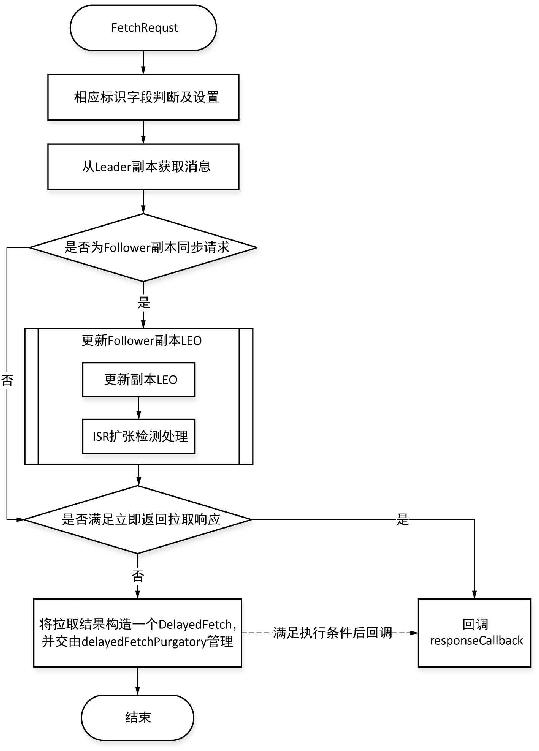
图3-31 副本管理器对FecthRequest处理的基本流程
3.6.7 副本同步过程
上一小节对Follower副本从Leader副本拉取消息过程进行了介绍，在拉取消息时会更新Leader副本中记录的该Follower副本的LEO信息，当Follower副本追上Leader副本的LEO时，同时会更新该Follower副本在Leader中的lastCaughtUpTimeMs。而Follower副本对于所同步数据的处理是在responseCallback之后进行的。本小节将详细分析副本同步的过程。
在3.6.3节提到过，ReplicaManager初始化时会创建一个ReplicaFetcherManager对象，Follower副本与Leader副本之间的数据同步就是由ReplicaFecherManager完成的。ReplicaFetchManager继承AbstractFetcherManager类，该类定义了一个fetcherThreadMap用于保存对每个代理的拉取请求的Fetcher线程。同时还提供了一个由子类来实现的抽象方法createFetcherThread()，用于创建拉取线程，以及对fetcherThreadMap管理相关的方法，主要包括以下方法。
- addFetcherForPartitions()方法：用于为分区添加Fetcher线程，其实就是将分区添加到ReplicaFetcherThread线程中，一个ReplicaFetcherThread可以对应多个分区，也就是说多个分区共用一个Fetcher线程，由该Fetcher线程负责这些分区的数据拉取操作。fetcherThreadMap的Key是一个BrokerAndFetcherId对象，该对象包括两个属性BrokerEndPoint和Fetcher线程的id，BrokerEndPoint封装了连接代理的host和port信息，Value为一个AbstractFetcherThread对象，在添加分区到Fetcher线程时，若fetcherThreadMap中还没有与该分区代理连接的Fetcher线程，则创建之，否则直接将分区添加到对应的Fetcher线程中。
- removeFetcherForPartitions()方法：用于从fetcherThreadMap中找到该分区Fetcher线程，从Fetcher中移除该分区，也就移除了该分区同步数据的线程，在关闭副本时就需要调用该方法，移除相应的Fetcher线程。
- shutdownIdleFetcherThreads()方法：当一个Fetcher线程不再包含任何分区时，该Fetcher线程就会被关闭。
ReplicaFetcherManager继承AbstractFetcherManager类，覆盖了createFetcherThread()方法，在该方法中创建了一个ReplicaFetcherThread线程对象，该线程继承于AbstractFetcherThread。AbstractFetcherThread定义的抽象方法processPartitionData()由子类来实现，对拉取的消息进行处理，Follower副本对消息处理就是由ReplicaFetcherThread在processPartitionData()方法中完成的。而同步请求是在AbstractFetcherThread类的doWork()方法中发起的，doWork()方法是线程真正执行体，由线程run()方法调用。类之间依赖关系如图3-32所示。
在AbstractFetcherThread类中定义了一个PartitionStates[PartitionFetchState]类型的partitionStates引用，PartitionStates底层是一个LinkedHashMap，以TopicPartition为Key，Value类型定义为泛型。PartitionFetchState包括分区的偏移量offset以及Fetcher线程的状态，因此partitinStates维护了分区与分区拉取线程同步的状态。在AbstractFetcherThread类的doWork()方法中根据partitionStates构造FetchRequest对象，若FetchRequst对象为空即表示当前没有分区要同步，则让线程阻塞${replica.fetch.backoff.ms}毫秒后再重试，当FetchRequest不为空时，则调用AbstractFetcherThread.processFetchRequest()方法发送FetchRequest请求。对于发送请求网络层实现我们不展开介绍。当FetchRequest发送后，通过KafkaApis处理后调用副本管理器的fetchMessages()处理，在前一小节已做详细分析，这里不再赘述。
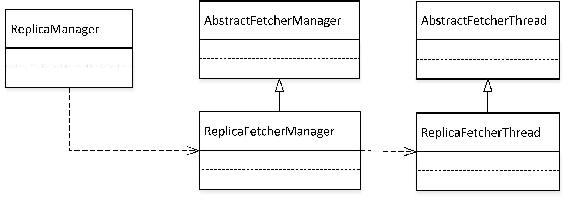
图3-32 副本同步所依赖的组件的类图
等待FetchRequest请求返回拉取结果后，若返回数据不为空，经过一系列数据校验处理后，调用AbstractFetcherThread的相应子类实现的processPartitionData()方法进行处理。对于副本同步则由ReplicaFetcherThread.processPartitionData()方法进行处理，对普通消费者则调用 ConsumerFetcherThread.processPartitionData()方法进行处理。ReplicaFetcherThread. processPartitionData()方法对FetchRequest返回的数据主要进行以下处理。
（1）将从Leader拉取到的数据调用副本的Log.append()方法追加到自己日志段中。这里的追加，无需自己生成偏移量offset值，直接使用返回数据转换为ByteBufferMessageSet对应的偏移量。
（2）取返回数据中附带的HW与自己当前的HW进行比较，取两者之中较小的更新自己的HW。
对ReplicaFetcherThread.processPartitionData()方法处理逻辑的介绍省略了相关边界校验、异常处理等。副本同步过程介绍至此，我们对同步过程重要环节以如图3-33所示的时序图进行总结。

图3-33 副本同步过程的时序图
3.6.8 副本角色转换
当分区ISR发生变化时，控制器会向分区各副本对应的代理发出LeaderAndIsrRequest请求，各代理的副本管理器接收到请求后调用becomeLeaderOrFollower()方法进行处理。该方法处理逻辑如下。
首先比较LeaderAndIsrRequest请求的控制器轮值次数controller_epoch与当前缓存中的local_controller_epoch值是否相等，若不相等，说明当前的请求已是一个过时的控制器发出来的，则不进行任何处理，直接返回Errors.STALE_CONTROLLER_EPOCH.code给控制器；否则对请求中的每个分区状态信息（PartitionStates）迭代进行以下处理。其中分区状态信息即分区在ZooKeeper的/brokers/topics/${topicName}/partitions/${partitionId}/state节点中记录的分区元数据，包括控制器轮值次数controller_epoch，该分区leader_epoch、该分区Leader节点对应的brokerId，该分区的ISR及AR信息。
（1）比较分区状态信息的leader_epoch值与缓存中该分区对应的leader_epoch值，为了便于讲解，这里记缓存中的leader_epoch为local_leader_epoch。根据leader_epoch与local_leader_epoch的大小关系分别进行以下处理。
- 若leader_epoch>local_leader_epoch：先检测该分区副本列表中是否包括当前代理，若当前代理不在副本之列，则当前代理直接忽略本次请求，此时将对该分区处理的结果应答码Errors.UNKNOWN_TOPIC_OR_PARTITION.code保存到responseMap中，responseMap是一个被声明为mutable.HashMap[TopicPartition, Short]类型的对象；否则将该分区信息保存到mutable.HashMap [Partition, PartitionState]类型的partitionState对象中。
- 若leader_epoch<=local_leader_epoch：则当前代理也忽略本次请求，将对分区处理的应答码Errors.STALE_CONTROLLER_EPOCH.code保存到responseMap中。
（2）过滤partitionState，依据各分区的Leader对应的brokerId与本机的brokerId是否相等将分区分成Leader和Follower两个集合，分别记为partitionsTobeLeader和partitionsToBeFollower，即若Leader的brokerId与本机的brokerId相等，则表示当前代理是分区的Leader副本所在的代理，否则当前代理是分区Follower副本对应的代理。
（3）若partitionsTobeLeader集合不为空，则调用ReplicaManager.makeLeaders()方法遍历该集合中的每个分区进行处理，使当前代理成为分区的Leader。若partitionsToBeFollower不为空，则调用ReplicaManager.makeFollowers()方法使当前代理成为分区的Follower副本。
（4）保证更新检查点信息的定时任务启动，通过一个Boolean类型的hwThreadInitialized变量来控制，若该定时任务已启动，则该变量为true。该定时任务启动后会每隔${replica.high.watermark. checkpoint.interval.ms}毫秒定时执行，默认是每5s执行一次。该定时任务对每个副本可见的偏移量进行持久化。
（5）关闭空闲的Fetcher线程。每个Fetcher线程负责一定数量的分区数据的同步，当该线程负责同步的分区数为0时，即为空闲的Fetcher线程。ReplicaFetcherManager维护了当前代理分配的所有分区的Fetcher线程，当一个分区成为Leader时，Fetcher线程从自己负责同步的分区集合中移除该分区。
（6）回调onLeadershipChange()方法，通过GroupCoordinator管理分区Leader上线/下线操作。
至此，副本管理器对LeaderAndIsrRequest请求处理过程介绍完毕。副本管理器对LeaderAndIsrRequest请求的处理的基本步骤如图3-34所示。
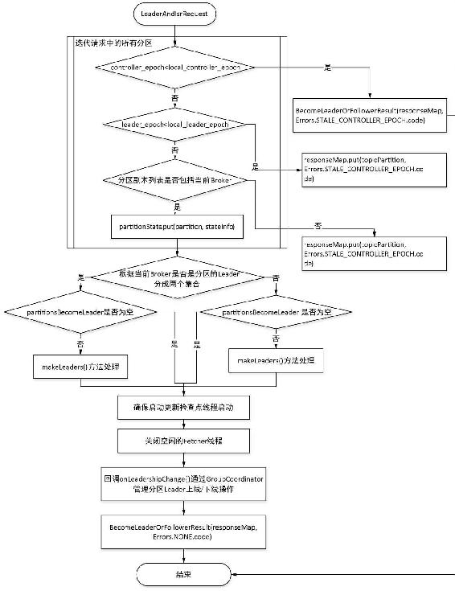
图3-34 副本管理处理LeaderAndIsrRequest请求基本流程图
在副本角色转换处理时，提到了将副本转换为Leader的ReplicaManager.makeLeaders()方法以及将Leader转换为Follower的ReplicaManager.makeFollowers()方法，下面简要分析这两个方法实现副本角色转换的基本逻辑。
ReplicaManager.makeLeaders()方法负责将指定的副本转为分区Leader，首先调用ReplicaFetcherManager.removeFetcherForPartitions()移除该分区的拉取线程，然后调用Partition. makerLeader()方法。
Partition.makeLeader()方法主要完成以下逻辑。
（1）根据PartitionState信息设置Leader副本维护的controllerEpoch，inSyncReplicas，leaderEpoch字段值以及维护的当前分区所有副本assignedReplicaMap集合。
（2）通过将Leader的brokerId与当前的brokerId比较，以判断Leader是否发生过变化，若是由Follower转换为Leader或者分区首次分配，则构造该Leader副本的HW值，并重设远程副本的LEO为−1。
（3）尝试更新Leader副本的HW，若Leader副本的HW被更新成功，则检测延迟操作是否满足执行条件，尝试让其执行完成。以Leader是否是由Follower转换而来作为方法的返回值。
ReplicaManager.makeFollowers()方法用于将本地副本转换为Follower副本。首先检测是否是由Leader副本转换为Follower副本，若是由Leader副本进行转换则先检查新Leader是否存活，若新Leader副本是存活状态则调用Partition.makeFollower()进行副本角色转换，否则创建一个新的副本，这主要是为了保证在checkpoint文件中记录有该分区的HW。副本角色转化成功后若Partition.makeFollower()返回true，表示是由Leader转换为Follower副本，则将该分区记录到partitionsToMakeFollower集合中。然后停止这些副本与旧Leader同步的Fetcher线程，这样保证当前所有新转换为Follower的副本还没有添加对任何分区的Fetcher线程。由于Leader副本发生了变化，例如，新Leader是从副本转换而来，可能导致数据不一致的问题，但Leader副本HW之前的数据已被各副本同步，因此需要调用logManager.truncateTo()方法将日志截取到HW的位置，并尝试完成该分区相关的延迟操作。最后调用ReplicaFetcherManager.addFetcherForPartitions()方法为新转换的Follower副本添加对分区新Leader同步的Fetcher线程。
Partition.makeFollower()方法执行逻辑如下。
（1）根据PartitionState对象信息获取该分区所有副本allReplicas集合及分区新的Leader，并设置controllerEpoch字段值。
（2）轮询allReplica集合，调用Partition.getOrCreateReplica()方法创建副本。
（3）根据PartitionState对像信息更新assignedReplicaMap集合，设置leaderEpoch和zkVersion字段值，由于Leader副本维护ISR，因此设置Follower副本的inSyncReplicas信息为空集合。
（4）检查Leader是否发生了变化，将Leader是否发生变化的判断结果作为该方法的返回值。
3.6.9 关闭副本
当删除一个主题、分区副本重分配、代理被关闭时由控制器发送StopReplicaRequest请求，经由KafkaApis收到请求后，在KafkaApis.handleStopReplicaRequest()方法中会调用副本管理器关闭副本的stopReplicas()方法进行处理。关闭副本操作会对副本状态进行转换操作，例如，删除一个主题时副本状态会经由如图3-35所示的状态变迁过程。
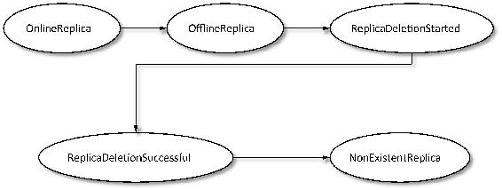
图3-35 删除主题操作时副本状态转换关系
由图3-35所示可知，在删除主题关闭副本时，其实是同时将该副本删除，然而关闭副本并不一定需要将副本删除，如代理关闭操作，对于这种场景，副本状态可能是由OnlineReplica转换为OfflineReplica即可。由此对关闭副本操作，通常有两种处理方式：一是将副本下线，二是将副本下线并删除。
下面详细分析副本管理器对关闭副本请求的处理。
首先，副本管理器会检查stopReplicaRequest请求所携带的controllerEpoch是否小于自己缓存的当前控制器的轮值数controllerEpoch，若stopReplicaRequest.controllerEpoch<controllerEpoch说明这个请求是由一个已过时的控制器发出的命令，则给予警告信息，拒绝处理，返回STALE_ CONTROLLER_EPOCH信息。否则从stopReplicaRequest请求中提取出待关闭副本的所有分区partitions，并用stopReplicaRequest携带的controllerEpoch值更新本地缓存的值。
然后，调用ReplicaFetcherManager.removeFetcherForPartitions()方法，将待关闭副本的所有分区对应的Fetcher从ReplicaFetcherManager维护的拉取线程fetcherThreadMap中移除，停止该副本数据同步操作。
最后，迭代partitions每个分区，调用副本管理器的stopReplica()方法进行副本关闭操作，并将副本关闭操作的状态码保存到responseMap中。
ReplicaManager.stopReplica()方法是副本关闭操作的真正执行者。它首先从副本管理器维护的本代理所有分区集合allPartitions中集合中移除待关闭副本的分区，若分区存在即表示请求关闭的分区是一个有效分区，并判断请求关闭副本是否要求将副本删除，若需要将副本删除，则调有该分区的delete()方法进行日志物理删除操作，删除后再检测被删除的分区对应的主题是否还有其他分区，若不再有该主题的分区，则从BrokerTopicStats中移除对该主题追踪的metrics。如果待删除的分区在allPartitions集合不存在，同时关闭副本的请求指定要删除副本，那么就需要构造一个TopicAndPartition对象，调用日志管理器从其维护的logs集合中找到该主题对应的分区，由日志管理器执行删除该分区的日志文件，即调用LogManager.deleteLog()方法处理。
其实，关闭副本的逻辑较简单，主要是关闭副本对应的Fetcher线程，让该副本不再执行拉取消息的指令。同时若需要删除副本，则对该副本的日志文件执行物理删除操作。关闭副本操作的流程如图3-36所示。
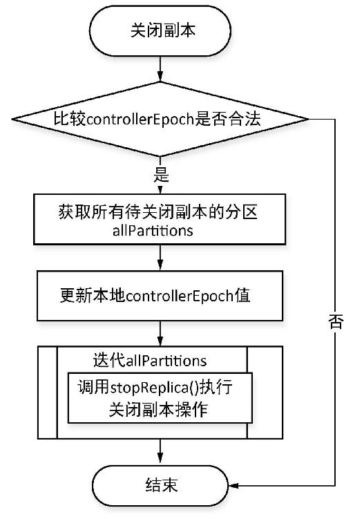
图3-36 关闭副本操作基本流程图
Table of contents
- 版权信息
- 内容提要
- 前言
- 第1章 Kafka简介
- 第2章 Kafka安装配置
- 第3章 Kafka核心组件
- 第4章 Kafka核心流程分析
- 第5章 Kafka基本操作实战
- 第6章 Kafka API编程实战
- 第7章 Kafka Streams
- 第8章 Kafka数据采集应用
- 第9章 Kafka与ELK整合应用
- 第10章 Kafka与Spark整合应用
- 欢迎来到异步社区！